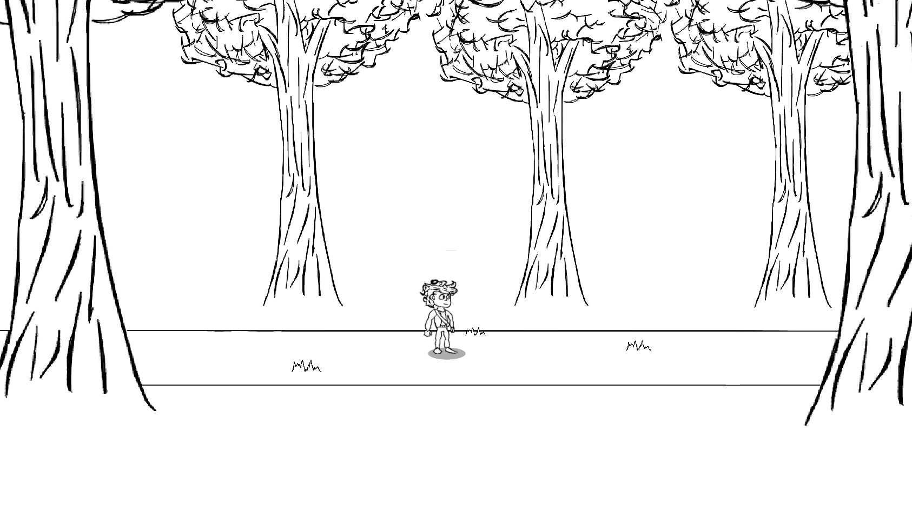
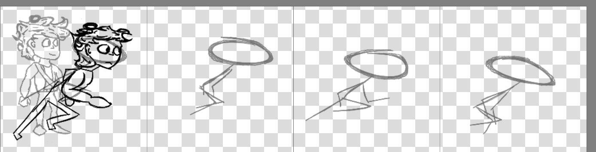
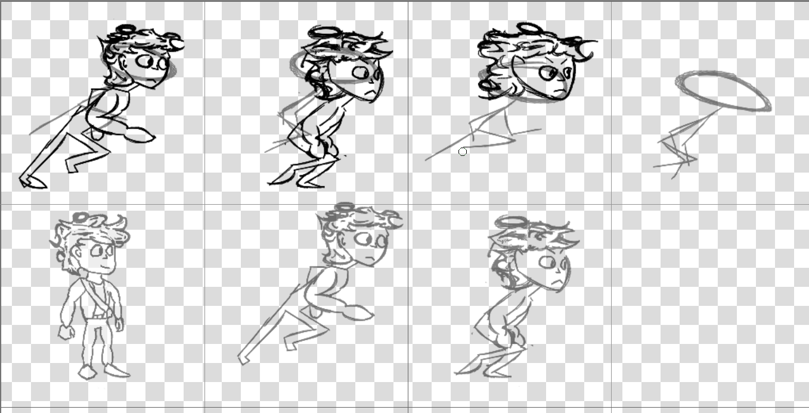
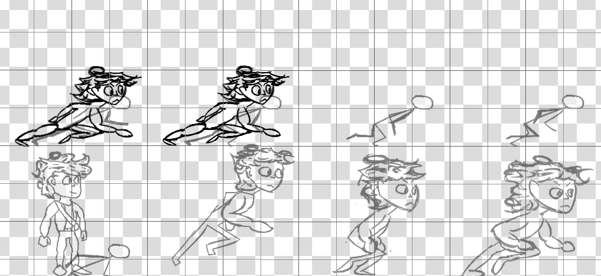
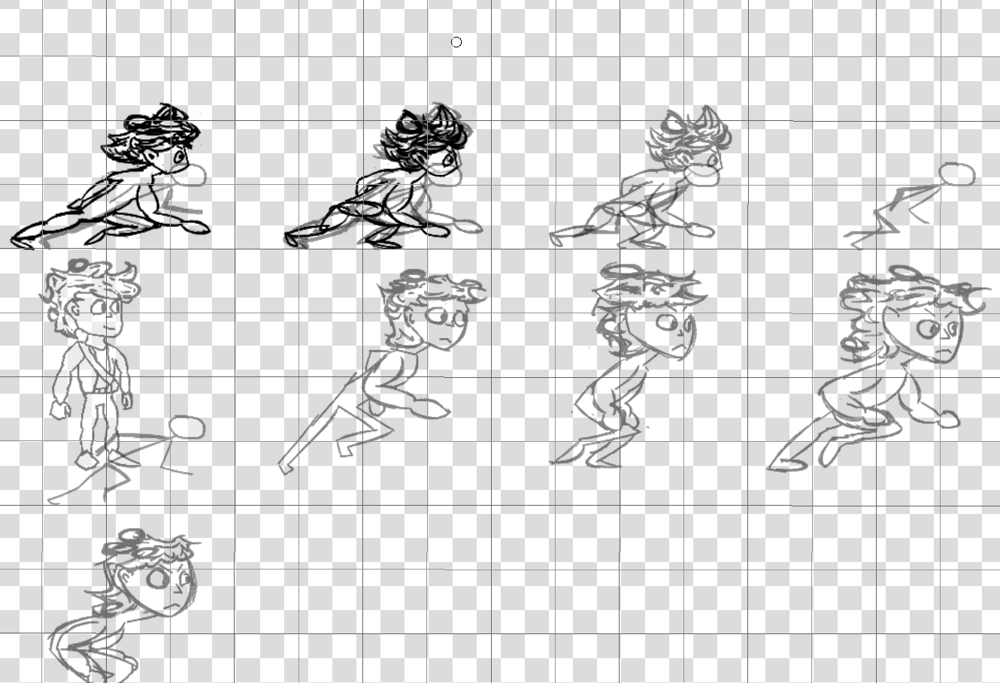
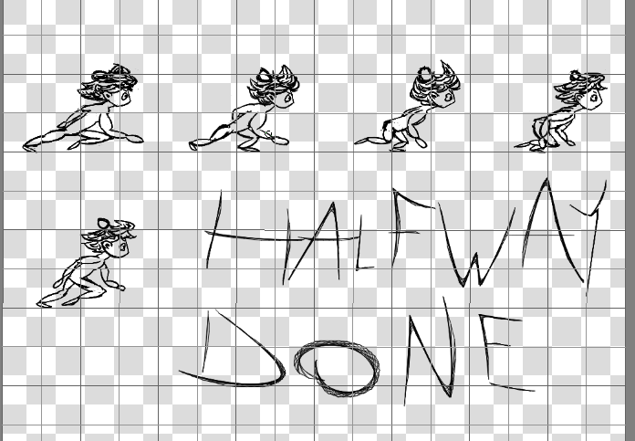
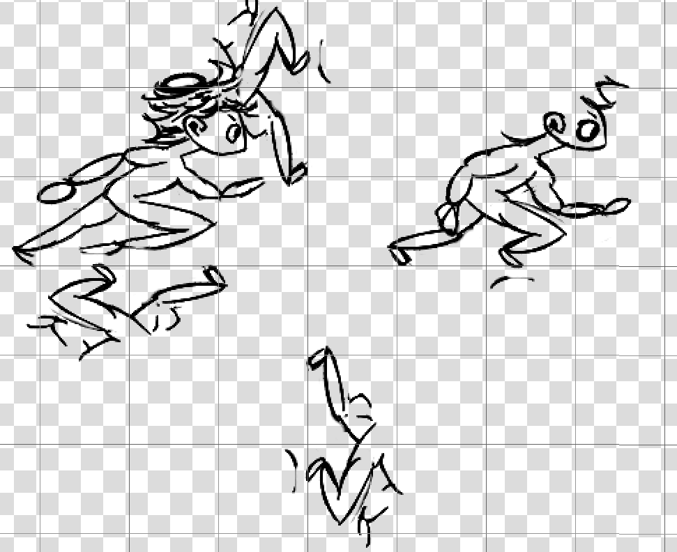
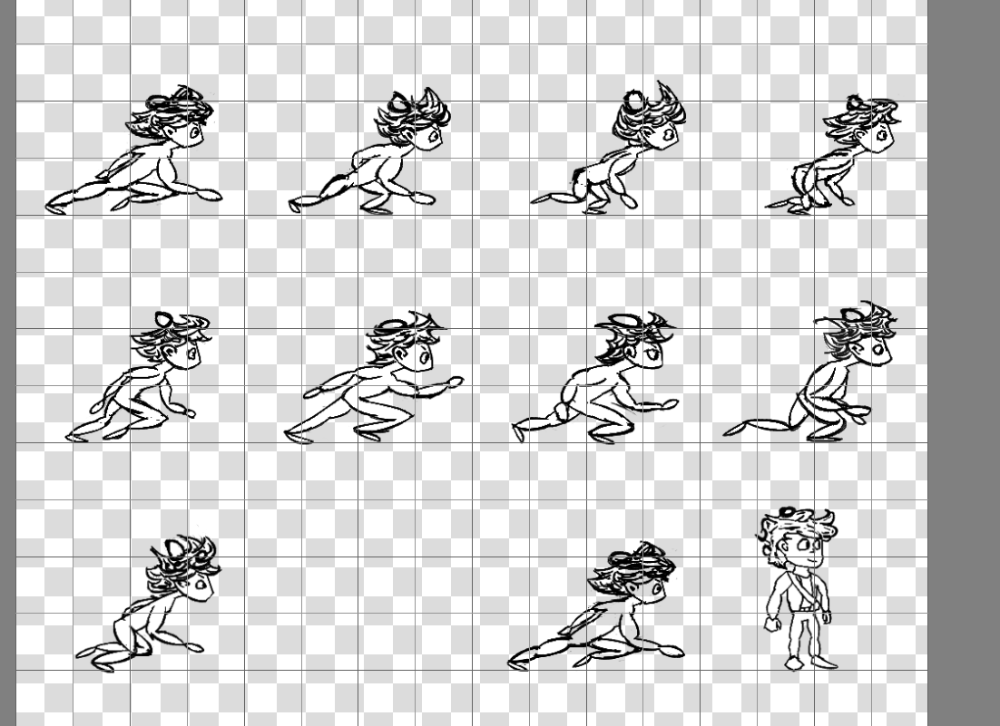
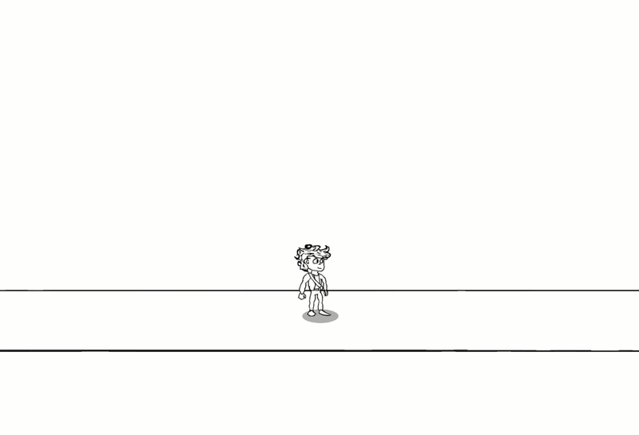

Hey friends. I spent the past two days working on the game and wanted to share some progress.
Most notably, I've moved to a 2.5D environment. To be honest, I really love this style, and I'm happy that switching to it feels natural with the evolution of the game. I also updated the player sprite, and have begun finding my own artistic style a little more. Which is nice.

The biggest time sink over the past two days has definitely been animating. So, I put Jay as the player sprite, but moving around the world just felt wrong. Static.
I want to feel like I'm part of the world. If I can't achieve that, then everything else falls apart. So I decided to give Jay a running animation, something fast, something that feels like you're sprinting as fast as you can and feeling the rush of wind on your face as the world goes by.
That took a while. I took a few pictures as I went along to share with all of you.







His running is clunky. It's awkward. His arms kind of make it look like he's trying to swim rather than run. His head doesn't really have a consistent shape. There's a lot of room for improvement. That said, I also feel like I learned a lot. I feel like I'm getting better at understanding proportions, consistency, and timing.

This is my first time uploading a gif. Feels like the only right way to show off something "alive" like this. Honestly, I kind of want to talk about my experience with blogging so far. I've only made three posts so far, this being the fourth, and I think it's nice. Like having an online journal.
But also, I still find it hard to be vulnerable. To find the right things to say. I don't know if other bloggers feel like that, but it's like sometimes I struggle to find the right things to say. I think it just comes down to listening to my feelings more about these things. If I actually have something to say, then I'll feel something true about it, and that's what I should articulate. Kind of like what I'm doing right now.
I wonder if my writing is boring? If anyone is ever even going to read this, heh. I mentioned I find it hard to be vulnerable. Well, I suppose because the moment I start saying things like "My art looks super good!" or "My game is going to be so good!" is the moment other people's opinions matter. Not that I feel those things right now. I'm noticing I said "right now"... does that mean deep down I'm expecting a day to come where I can proudly exclaim those things? Honestly, yeah. That's the second time I've used "honestly" in a short time. I wonder if that makes my writing go stale?
Back to the other thing though, yeah. Right now, I know the game doesn't look very "good". It's rough. It's inconsistent. It's mine, 100%, and I feel proud of it, I think I always will no matter what. But also, what's that thing Ira Glass said? About the gap and taste? While I will always be proud of my game, my taste is the thing I'm trying to live up to. And so once I reach that, I think that will be the day I can face the world and shout "My game is awesome!" without any shame or guilt.
And in fact, now that I'm thinking about it, I won't always be proud of my game. Now, when I look back at things I've made in the past - be it sprites or code, the taste is what my standards are. I think I'm proud of what I've made right now because I've invested time and effort into it. But if I were to look back at this post in a few months, or even weeks? I'll probably just be left thinking "that animation is clunky". Which is a good thing. I think it's great, actually. It's why I'm not satisfied with what I've made. It gets the job done. It's "good enough". But it's not great.
I don't think I'll make a new animation for another bit. There's other things to focus on, but mainly because right now is the "good enough" phase. It wouldn't hurt, improving the animation. Spending another 2 days to make something better. But that feels like a wall. It also feels like that one saying, "the first 90% of the project will take 90% of the time, and then the last 10% will take another 90%". It's an old joke that applies to so many things, but especially video game development.
To be honest, I always thought I would come up with a genius idea on paper, a genius gameplay loop, maybe toss a few programmer sprites into godot, verify it's good, and then hire an artist to do the hard work for me. But I don't think that's the case. Atleast for this, art and gameplay go hand in hand, because I'm not making a game. I'm making a world that's alive. A story. Something more than another roguelike. Is that pretentious to say? No offense to roguelikes. There's just SO MANY of them! Like oh my god!!! It's like the isekai trend in anime, they keep making the same crap with small variations, and sometimes you get something that's really good but most of the time it's just kind of forgettable.
Will my game be forgettable? I know I'm talking it up, but... is it really going to be something "better" than what's flooding the current game market? I put better in quotations because I don't think there's a way of actually comparing if one game is better than another. I mean, that's just the human experience lol. When it comes to these creative things, it's all entirely dependant on your subjective viewpoint. I can't go around saying my subjective views are the only correct ones in the whole wide world, but also I shouldn't focus on everyone else's.
I'm... kind of yapping now. I have been for the past while. I mentioned vulnerability, and this feels pretty vulnerable. I wonder if some people will judge or criticise me for what I've written? For how I feel? I suppose that's the law of the world. But I want to focus on the positives. I want to focus on the fact that roguelikes are positive experiences that have brought so much fun and happiness to the world.
And I want to do the same.